Stocker is a Python-based application that enables users to track cryptocurrency prices in real time. It retrieves market data through the Coinbase API and supports configurable price-target alerts based on elapsed time or percentage change, helping users avoid missing key price movements. In addition to built-in visual and audio notifications within the GUI, Stocker can optionally send SMS alerts via AWS Simple Notification Service (SNS).
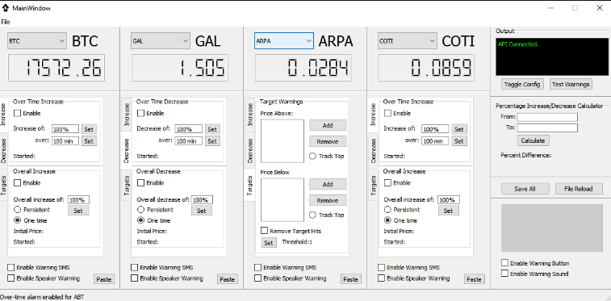
This program generates shellcode from an assembly source file. The user provides the assembly file and the target format (ELF, WIN, or WIN32). The tool assembles the source with NASM to produce an object file, then disassembles the resulting .o or .obj with objdump. It extracts the opcodes from the .text section and formats them into a shellcode byte sequence for use in security testing and research contexts.
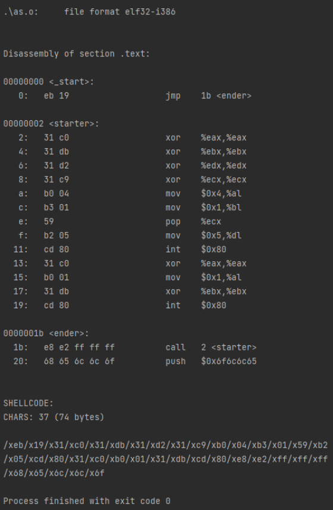
This Java-based port scanner supports host discovery and both single-host and multi-host port scanning. It also includes convenience features such as saving the list of online hosts to a file and loading a scan host range from a file. Users can configure the target network address as needed. An AUTO scan mode allows the user to specify the port range, timeout, and scan order (sequential or randomized), and optionally hide closed ports to keep results concise.
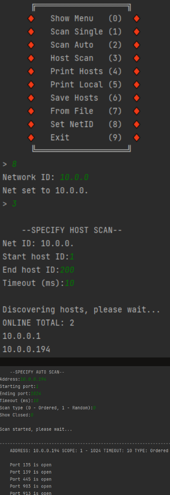
This Python application monitors network traffic for TCP port-scanning activity and generates alerts based on a configurable port range and fan-out rate. It uses two concurrent threads: a packet-sniffing thread that logs new connections to a hash table, and a processing thread that continuously analyzes those entries for anomalous behavior. When suspicious activity is detected, the application reports it to the console. Sniffer: Captures packets, parses the Ethernet and IP headers, validates the TCP protocol, and then extracts key TCP fields. It records the source and destination IP addresses, destination port, and SYN/ACK flags, along with a timestamp for previously unseen connections. Table Processor: Iterates over the connection table to remove expired entries based on a defined connection lifetime (5 minutes). It also computes the fan-out rate per source and flags potential port scanners when the configured threshold is exceeded, issuing a warning in the console.
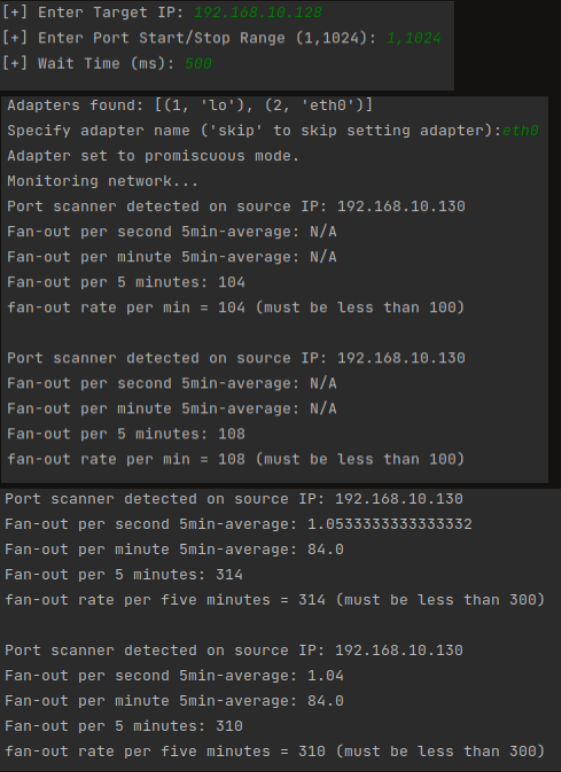
This PowerShell script monitors common Windows persistence locations and reports any new changes every five minutes, helping system administrators stay aware of potentially significant system modifications. It operates by taking an initial baseline snapshot, then generating a new snapshot at each interval and comparing it to the previous baseline. Any differences are logged, and the most recent snapshot becomes the new baseline for the next cycle. The script tracks changes in Scheduled Tasks, key startup-related registry paths (HKCU/HKLM/HKCR), and Startup folders. Specifically, it monitors locations such as Shell Folders, User Shell Folders, Run, and RunOnce under HKLM/HKCU—areas commonly used to launch programs at system startup. It also watches file-association “shell” keys for executable extensions (e.g., .exe, .bat, .com, .hta, .pif), which can be abused by prepending a malicious executable so it runs whenever the associated file type is launched. In addition, the script checks for changes to the explorer.exe path to prevent Explorer subversion, and monitors ActiveX/related startup component entries that can execute before Explorer loads.
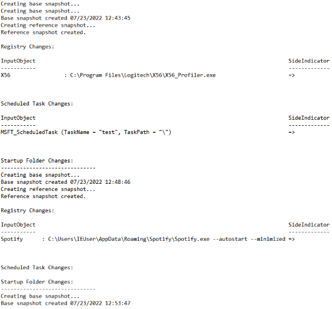
This Bash script monitors a network for newly active IP addresses and open ports. It begins by recording a baseline of all hosts and ports that are reachable at startup, then performs periodic checks every five minutes to identify changes. Any newly detected hosts or open ports are logged, allowing users to review and respond to network changes in a timely manner.
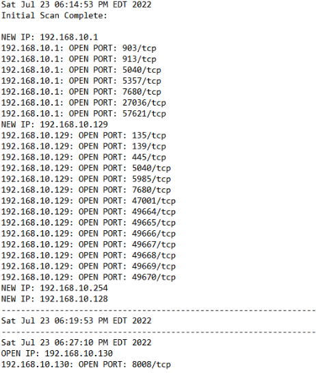
Written in C, this project implements a simple TCP-based FTP client/server application. The server listens on a specified port for incoming client connections and, once connected, receives a filename and its associated file contents. The client may send multiple files during a single session or terminate the connection when finished. Client: The client establishes a reliable stream-socket connection to the server. It calculates the filename length and file size, converts these values to network byte order, and transmits them to the server, validating return codes for each write operation. The file contents are then read into a buffer and sent over the connection. After transmission, the client waits for an acknowledgment (ACK) from the server to confirm successful receipt before either sending another file or terminating the session with a DONE command. Server: The server binds to a socket descriptor and listens for incoming connections. Upon accepting a client connection, it receives the file metadata (filename length and file size) followed by the file data stream. The incoming data is buffered and written to disk once all bytes are received, reconstructing the transmitted file. After completion, the server sends an acknowledgment to the client and returns to listening for new connections.
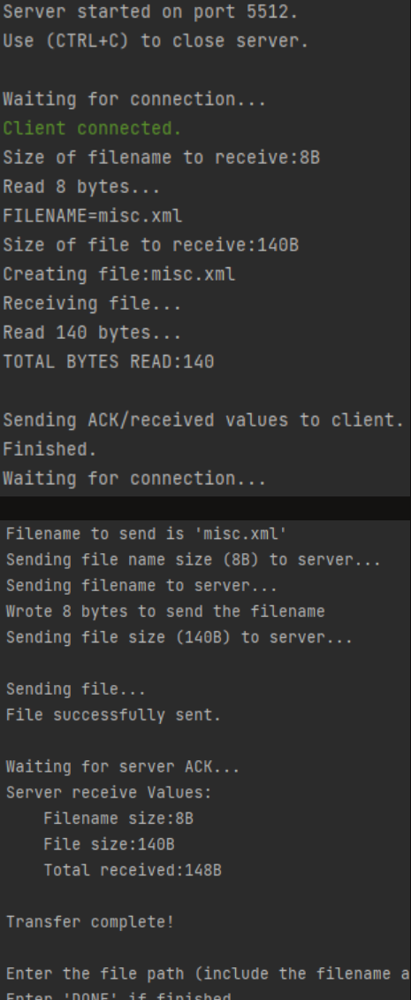
This application accepts a CIDR (Classless Inter-Domain Routing) IPv4 address as input and outputs the corresponding subnet along with a list of all valid host IP addresses, excluding the network and broadcast addresses.
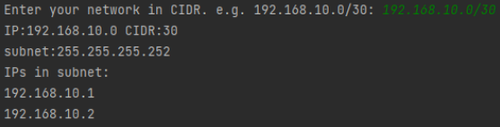
This Python project is a Caesar cipher breaker that uses frequency analysis to decrypt messages. It begins by identifying the most common character in the ciphertext, then compares it against an ordered list of letters ranked by typical frequency in English. Iterating through that list, the program computes the shift by taking the ASCII difference between the candidate plaintext letter and the ciphertext’s most frequent letter. It applies the resulting shift across the entire ciphertext to generate a potential plaintext. This process repeats with the next most likely candidate until the user confirms the correct decryption.
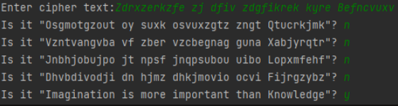
This C++ program implements a prefix tree (trie) to store a user-provided set of words, enabling efficient prefix lookups and word searches. Tree operations run in O(M) time, where M is the length of the input word or prefix. Each path through the tree represents a word, and a terminal node (tracked via a boolean “end-of-word” flag) marks complete entries. Nodes are represented using pointers, and inserting a new word is performed by recursively traversing the trie: for each character, the program checks whether a corresponding child node exists, creates one if necessary, and continues until the final character is processed.
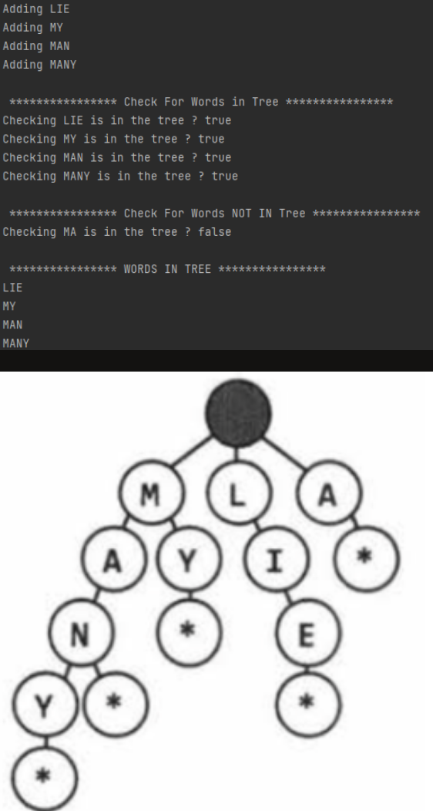
For context, DCS is a combat flight simulator in which each scenario is defined by a “mission file.” These files use a proprietary syntax with some similarities to XML. While DCS includes an in-game mission editor, creating missions is time-consuming and does not support collaborative workflows. This program enables collaboration by merging multiple mission files into a single combined mission. It processes two mission files at a time: each file is parsed, relevant data is extracted, and a new mission file is generated that consolidates unit data into unified lists, resulting in a single merged scenario. Although the implementation is intentionally lightweight and does not support every mission editor feature, it significantly reduces the workload associated with tasks like unit placement. The tool can be run iteratively—merging the newly generated mission with additional mission files—allowing for an effectively unlimited number of contributors.
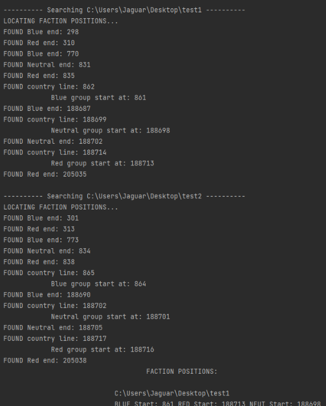
This project is a conversational Discord chatbot that integrates with the GPT-3 API to enhance server chat. The bot only responds to members who explicitly opt in to a conversation, allowing users to subscribe or unsubscribe at any time. Beyond opt-in/opt-out controls, the bot includes several additional features: users can switch between different AI “intelligence” (model) levels via a single command, generate a horror story from a short prompt, perform quick Wikipedia term lookups, list current channel members, pause/resume/terminate a bot session, run image searches, and initiate an AI-to-AI mode where two AI instances converse within the same chat.
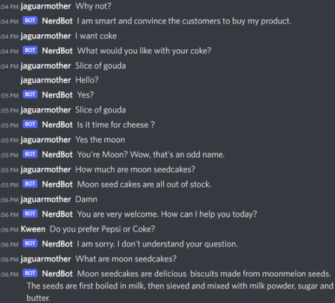